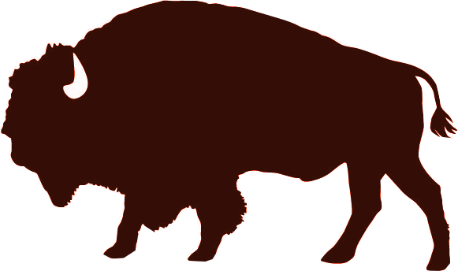
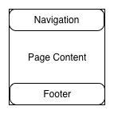

Step 1: Define Your Audience/Tone
-
Who will visit your site? Potential employers? New clients or customers?
Potential restaurant-goers/customers will visit my site.
-
What can make you and/or your product stand out against your competitors?
My business will stand out amongst competitors because it will feature high-quality, local and organic ingedients at an affordable price, with a stunning atmosphere!
-
How would you speak to your clientele if you were communicating in person? How could you translate that style and tone digitally?
I would speak to my clientele in person in a straight-forward, down-to-earth, and friendly manner.
This tone can be translated digitally with a simple and clean, yet informative layout and design.
-
What colors represent you or your product?
My business can be represented with bold earth tones, like deep greens, golden yellows, and various shades of brown.
-
What images illustrate your message?
My message can be illustrated by images of grazing animals, farm and pasture land, as well as delicious and fresh food.
Step 2: Identify Content
-
What are the three-to-five pages titled?
The pages of the site will include: home, about, menu, contact, press.
-
What will be the purpose for each?
- Home: This page will be the landing page of the site.
- About: This page will describe the company's philosophy, mission, and values.
- Menu: This page will provide the current menu, in detail.
- Contact: This page will list the contact information, hours of operation, and address of the restaurant.
- Press: This page will feature any recent press coverage of the business.
-
What should each page contain? Will there be textual content? Or just images?
- Home: This page will contain the company logo, wordmark, and a background image.
- About: This page will contain text for the content regarding the company, as well as images.
- Menu: This page will contain text for the menu items, descriptions, and prices.
- Contact: This page will contain text for the contact and visitor information, as well as an embedded map.
- Press: This page will contain text for the content.
Step 3: Create a logo

The Free Range Cafe
Step 4: Create a style guide
Typography
Header 1
Header 2
Header 3
Header 4
Header 5
Header 6
Color
Step 5: Create/Update sketches
